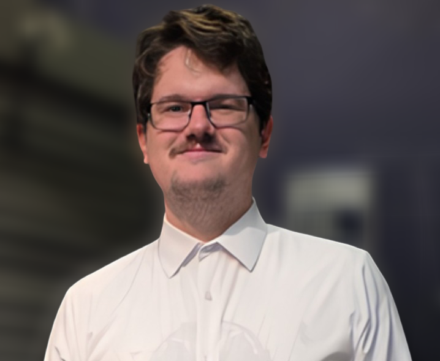
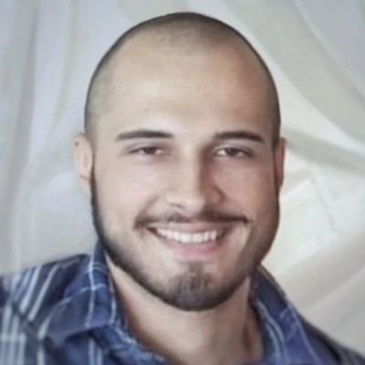

People
The team building and advising behind Wolf AI Advisory.
Dimitrije Matijašević
GenAI Engineer
Dimitrije is a GenAI Engineer at Wolf AI, where he builds solutions around large language models, AI agents, RAG pipelines, and MCP servers. He focuses on turning generative AI into practical, production-ready systems that automate workflows and solve real business problems.

Gregor Radović
GenAI Engineer
Gregor works primarily on designing conversational AI chatbots at Wolf AI. Before joining, he worked as a software engineer for 5 years, most recently as a consultant for Tata Consultancy Services. Gregor holds a degree in computer science and philosophy from Drew University. Outside of work, he enjoys reading novels and designing strategy games.

Marko Dimović
Predictive and GenAI Engineer
Marko is a Predictive and GenAI Engineer at Wolf AI, where he builds solutions around large language models, AI agents, RAG pipelines, and MCP servers, alongside predictive modeling work including Energy Predictor AI models. He focuses on turning generative AI and predictive systems into practical, production-ready tools that automate workflows and solve real business problems.